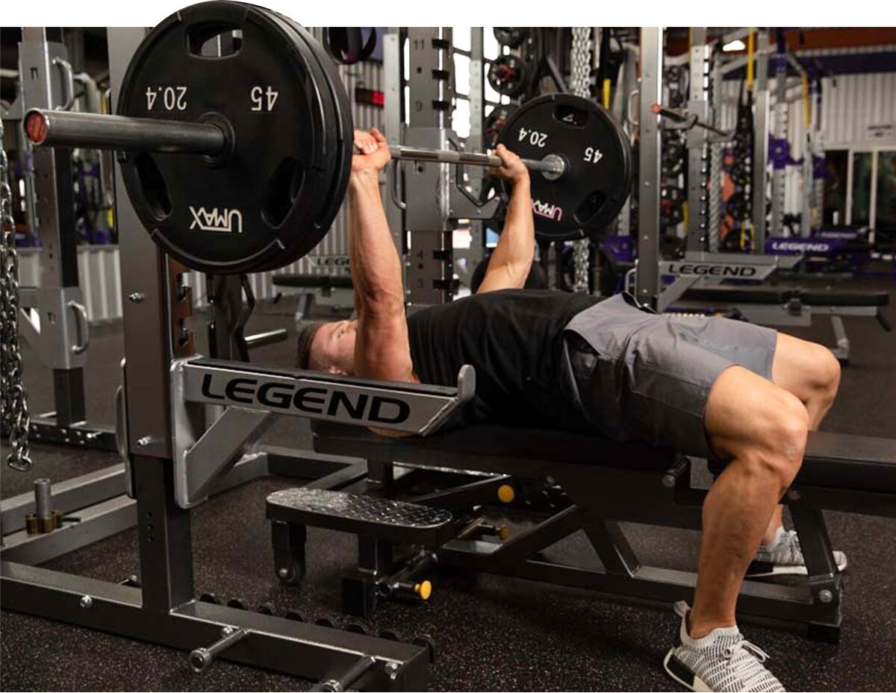
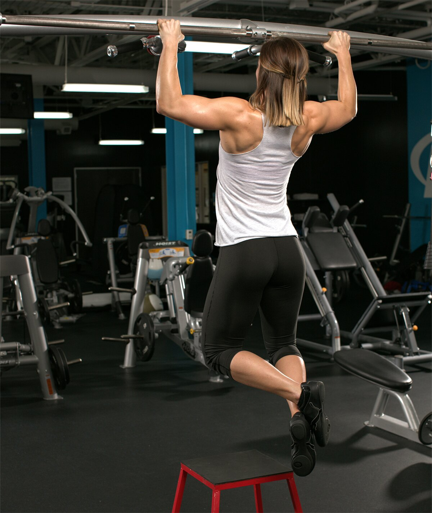

Five-day splits offer you the chance to launch a full-scale assault on a target muscle by maximizing volume and exercises for advanced-level growth. Here are two classic options.
Bill Geiger
October 31, 2024 • 16 min read
Sure, you can build muscle on a three-days-a-week training schedule. You can do just great on a four-day split. But you want more. You love the gym and you want to be there nearly every day if you can, dialing in your physique piece by piece.
Welcome to the land of the five-day split, home of countless bodybuilding giants who know how to direct the big hurt to the target muscles they train each day. If you're serious about your training and making gainz, and the gym is your second home (bordering on the first), this is precisely where you want to be.
Here's what you need to know to build your perfect schedule, including two options you can put into action starting today.
Why Follow a Five-Day Split?
When you're only training 3-4 days a week or full-body or upper/lower splits, you usually can't do 4 or 5 exercises for each muscle group—not unless you have all day to spend in the gym, anyway. But following a five-day split allows you to combine several exercises to blast your target muscle groups from a variety of angles.
It also allows you more space to experiment with more advanced intensity boosters like partials, dropsets, and rest-pause sets.
With just a single muscle group (or a main muscle group and a smaller, secondary group) to train on any given day, the extra volume causes greater damage to muscle fibers. So, whereas a three-times-a-week lifter who does only a handful of sets for a given muscle group requires just a day or two for recovery, a five-day lifter incurs a far greater degree of muscle damage that requires significantly more. Remember, the workout itself is what initiates the muscle damage; actual repair and growth happen during recovery
A common knock against five-day splits or "bro splits" is that once you hit a muscle group, it might not get worked in the gym again for a full week. Some argue that this isn't often enough for optimal growth, and a few studies have provided data points seemingly backing this up. But a significant meta-study from 2019, co-authored by Bodybuilding.com contributor Brad Schoenfeld, Ph.D., among others, backed up the value of the five-day split, concluding that there was "no significant difference between higher and lower frequency on a volume-equated basis." [1]
That may sound like "sure, go ahead and train chest once a week," but there's a caveat: that part about the equal volume. In simple terms, there's no room for wasted half-workouts here. You must train both intelligently and intensely, with the goal of doing a week's worth of work in a single session.
Rules of the Five-Day Split
1. Make Sure It Matches Your Experience Level
A five-day split isn't a protocol for most beginners to jump right into. If you're only a year or two into lifting, you need to gradually increase training volume over time. In that case, beginner-focused workouts are your best bet.
Going straight from 5-8 to 16-20 sets for a given body part could cause serious nervous system fatigue and a wallop of DOMS that can border on unhealthy. Especially if you don't have your nutrition dialed in at an advanced level, it's a recipe for burnout or injury. Instead, make gradual upticks in your training volume over time, and only pick a five-day split if it really is the best option for you.
2. Don't Hit the Same Muscles Over and Over
The delayed-onset muscle soreness (DOMS) and extended recovery that accompany higher volume training mean you need to be strategic about what you train and what you let recover.
For example, training chest on day one, shoulders on day two, and triceps on days three is a bad choice. Those are all pushing muscle groups, meaning they hit some of the same muscles, namely the upper pecs, anterior delts, and triceps. Doing them on consecutive days defeats the purpose of building in additional recovery time and will limit how hard you can work. You'll want to be similarly careful about arranging your pulling workouts.

3. Don't Just Add Volume
Just because today is "chest day" doesn't mean you need to do all the chest exercises you've ever seen on Instagram—even the ones that are basically the same as each other, but with a tiny twist. Instead, the exercises you choose should complement rather than repeat one another.
An example would be doing dumbbell incline presses after doing some type of flat-bench presses. After that, you could do a move focusing on the decline position, like decline dumbbell flyes.
Why not simply pile on the volume? For one, it's difficult to maintain peak energy levels throughout numerous exercises. As fatigue grows, each successive exercise is likely a little less effective than the one before it. Also, levels of the growth-busting hormone cortisol rise the longer you train. A well-established "sweet spot" is to set a 70-minute time limit on the length of your training session. This forces you to prioritize your exercises and allows you the time and peak energy to hit just one or two body parts on most training days.
4. Use Multiple Rep Ranges
Many popular split workouts specify 3 sets of 10 reps for each and every movement. Yes, this can work well. But another time-tested approach, which you'll see in the workouts below, is to challenge yourself with slightly heavier sets at the beginning of your training session when your strength levels are highest, and over the course of the workout opt for relatively lighter loads to finish with a pump.
In action, that means you'll be using 6-8RM weights early on, and 10-12RMs later, meaning the latter exercises are using relatively lighter loads. (A 6RM load is one in which you reach muscle failure at about 6 reps.) As you get stronger and can do more reps, increase the load to again ensure you're working in the suggested target rep range.
5. Change It Up Every Once in a While
Follow a program as close as possible to "as written" for at least 4-6 weeks to give your body a chance to progress at the movements. However, there's a point of diminishing returns for most lifters that's usually right around two months. Changing your split is one way to introduce change, but there are many others: swapping out exercises, changing the order, targeting different rep ranges, and adding advanced training protocols like slow negatives or other popular intensity boosters. Don't stick with a routine that stopped working long ago.

Five-Day Split Program 1: Five On, Two Off
This one is popular with trainers who want their weekends off. But that comes at a cost! You'll have to be committed to training before or after work or school, and be fully prepared to optimize your muscle recovery post-training so you're ready to go again within 24 hours.
The upside, however, is you have your weekends to rest up and recover so you can feel well rested by Monday to start the cycle anew.
Training Guidelines
- The sets listed below include only working sets, not warm-up sets. Do as many warm-up sets as you need, and never take warm-ups close to muscle failure.
- Choose 4-5 exercises per larger muscle groups and 2-4 for smaller ones, selecting a load that triggers muscle failure in the 8-12 rep range to maximize hypertrophy.
- Rest for 60-90 seconds between sets.
- Because you're training a single muscle group for more sets, consider intra-workout supplements that help combat fatigue. For example, you could take some BCAAs during your workout and/or intra-workout carbs to ensure energy levels don't dip.
- Add either abs or calves wherever makes the most sense to you, up to three times a week.
- For the arms workout, alternate the order each week. One week do the biceps first, and the next week do triceps first.
1. Flat Dumbbell Press
Pyramid up in weight over the first 4 sets.
5 sets, 10, 6-8, 6-8, 6-8, 10 reps (rest 90 sec.)
2. Smith Machine Incline Bench Press
Use a bench set to a low incline of around 20-30 degrees. After taking the final set close to the point of muscular failure, perform a single dropset, immediately reducing the weight by around 25% and lifting close to failure again.
3 sets, 8-10 reps (rest 90 sec.)
3. Decline Smith Machine Press
3 sets, 10 reps (rest 90 sec.)
4. Cable cross-over
4 sets, 10-12 reps (rest 1 min.)
5. Incline Straight-Arm Pull-Over
Hold the top position of the final rep for 5 seconds, squeezing your pecs isometrically.
3 sets, 12 reps (rest 1 min.)
1. Barbell back squat
Pyramid up in weight over the first 4 sets.
5 sets, 10, 6-8, 6-8, 6-8, 10 reps (rest 90 sec.)
2. Leg Press
After taking the final set close to muscular failure, perform a single dropset, immediately reducing the weight by around 25% and lifting close to failure again.
3 sets, 8-10 reps (rest 90 sec.)
3. SMITH MACHINE LUNGE SQUAT
Perform all of the reps on one side before switching to the other side. Rest as little as possible between sides and 1 min. between sets.
Smith Machine Lunge
3 sets, 8-10 reps (left side, no rest)
Smith Machine Lunge
3 sets, 8-10 reps (right side, rest 1 min.)
4. Leg Extension
After taking the final set to muscular failure, perform a single dropset, immediately reducing the weight by around 25% and lifting to failure again.
3 sets, 10-12 reps (rest 1 min.)
5. Romanian Deadlift
4 sets, 10, 8, 8, 8 reps (rest 90 sec.)
6. Lying Leg Curl
3 sets, 10-12 reps (rest 1 min.)
7. Standing Calf Raise
4 sets, 12, 12, 20, 20 reps (rest 30 sec.)
Day 3: Front and Lateral Delts, Traps
1. Push-press
After taking the final set close to the point of muscular failure, perform a single dropset, immediately reducing the weight by around 25% and lifting close to failure again.
3 sets, 10, 6-8, 6-8 reps (rest 90 sec.)
2. Cable straight-bar upright row
3 sets, 8-10 reps (rest 1 min.)
3. Front Cable Raise
After taking the final set close to the point of muscular failure, perform a single dropset, immediately reducing the weight by around 25% and lifting close to failure again.
3 sets, 10 reps (rest 1 min.)
4. Cable Side Raise
After taking the final set close to the point of muscular failure, perform a single dropset, immediately reducing the weight by around 25% and lifting close to failure again.
3 sets, 12-15 reps (rest 1 min.)
5. Standing dumbbell shrug
After taking the final set close to the point of muscular failure, perform a single dropset, immediately reducing the weight by around 25% and lifting close to failure again.
3 sets, 10 reps (rest 1 min.)
1. Barbell Row
Pyramid up in weight over the first 3 sets, wearing a weight belt on your heaviest sets.
4 sets, 10, 6-8, 6-8, 8-10 reps (rest 90 sec.)
2. Lat pull-down
After taking the final set close to the point of muscular failure, perform a single dropset, immediately reducing the weight by around 25% and lifting close to failure again.
3 sets, 8-10 reps (rest 90 sec.)
3. Seated Row
After taking the final set close to the point of muscular failure, perform a single dropset, immediately reducing the weight by around 25% and lifting close to failure again.
3 sets, 10 reps (rest 90 sec.)
4. Leverage High Row
After taking the final set close to the point of muscular failure, perform a single dropset, immediately reducing the weight by around 25% and lifting close to failure again.
3 sets, 10-12 reps (rest 90 sec.)
5. Straight-arm dumbbell pull-over
Perform on a decline bench, if possible.
3 sets, 12-15 reps (rest 1 min.)
6. Cable cross-over
Perform with the cables attached at the highest possible point.
4 sets, 10-12 reps (rest 1 min.)
Day 5: Arms
On alternate weeks, do the biceps first, then triceps.
1. Dip Machine
After taking the final set close to the point of muscular failure, perform a single dropset, immediately reducing the weight by around 25% and lifting close to failure again.
3 sets, 6-8 reps (rest 90 sec.)
2. Seated triceps press
3 sets, 8-10 reps (rest 1 min.)
3. SINGLE-ARM CABLE TRICEPS KICK-BACK
Perform all of the reps on one side before switching to the other side. Rest as little as possible between sides and 1 min. between sets.
Single-arm rope kickback
3 sets, 8-10 reps (left side, no rest)
Single-arm rope kickback
3 sets, 8-10 reps (right side, rest 1 min.)
4. Barbell Curl
Perform the first 2 sets with your hands slightly narrower than shoulder width, and the second 2 reps with your hands slightly wider than shoulder width.
4 sets, 6-8 reps (rest 1 min.)
5. Seated Band Incline Biceps Curl
3 sets, 8-10 reps (rest 1 min.)
6. Machine Preacher Curl
3 sets, 10-12 reps (rest 1 min.)
Days 6 and 7: Rest
Five-Day Split Program 2: Two On, One Off
As mentioned, the higher volume of a five-day split demands greater recovery, and that's built into this two days on, one off cycle. Rest days are inserted every third day, though you'll still hit every body part over the course of seven days. This arrangement necessarily requires occasional weekend training days, and rest days will precede every major muscle group at least once every two weeks.
Here's a common schedule for this approach:
-
Day 1: Chest and triceps
-
Day 2: Back and biceps
-
Day 3: Rest
-
Day 4: Shoulders and traps
-
Day 5: Arms
-
Day 6: Rest
-
Day 7: Legs
-
Day 8: Chest and triceps
-
Day 9: Rest
Whenever possible on this split, try to avoid working pushing and pulling muscle groups twice on consecutive days, although this may not always be possible.
One big advantage of this particular split is that the biceps and triceps, smaller muscle groups that recover more quickly, get trained twice over the split. This is a great strategy if you're looking for serious arm growth. Since your arms have already been worked pushing the heavy loads on chest and back days, these supplemental arm workouts can be nothing more than a single exercise that's primarily focused on the pump.
1. Incline dumbbell bench press
Start with the bench at an incline of around 45 degrees, then lower it one notch every set until it is flat. Do a set that's flat, then raise the bench one notch every remaining set.
7 sets, 10, 6-8, 6-8, 6-8, 8-10, 8-10, 8-10 reps (rest 90 sec.)
2. Decline barbell bench press
3 sets, 10 reps (rest 90 sec.)
3. Pec Deck Fly
4 sets, 10-12 reps (rest 1 min.)
4. Triceps dip
Only perform negative or eccentric reps. Use a box or step to get into the start position atop parallel bars and take a full 5 seconds to lower yourself very slowly. Then step on the box again to get back to the top. When you can no longer control the speed of the negative for at least 3 seconds, stop the set.
3 sets, to failure (rest 1 min.)
5. Rope Press-Down
Start with your 10RM, but rest only 20 seconds upon getting close to failure. Reduce the load by a single plate when you cannot complete at least 8 reps. Continue this dropset/rest-pause combination for 10 solid minutes for the arm pump of your life.
1. Close-grip pull-down
4 sets, 12, 8-10, 8-10, 8-10 reps (rest 90 sec.)
2. T-Bar Row
4 sets, 10, 6-8, 6-8, 8-10 reps (rest 90 sec.)
3. SMITH MACHINE LUNGE SQUAT
Perform all of the reps on one side before switching to the other side. Rest as little as possible between sides and 90 sec. between sets.
Smith Machine Lunge
3 sets, 10 reps (left side, no rest)
Smith Machine Lunge
3 sets, 10 reps (right side, rest 90 sec.)
4. Wide-Grip Seated Cable Row
3 sets, 10-12 reps (rest 90 sec.)
5. Stiff-Arm Push-Down
3 sets, 12-15 reps (rest 1 min.)
6. Machine Preacher Curl
Start with your 10RM, but rest only 20 seconds upon getting close to failure. Reduce the load by a single plate when you cannot complete at least 8 reps. Continue this dropset/rest-pause combination for 10 solid minutes for the arm pump of your life.
Day 3: Rest
Day 4: Shoulders, Upper Traps
1. Seated barbell shoulder press
After taking the final set close to the point of muscular failure, perform a single dropset, immediately reducing the weight by around 25% and lifting close to failure again.
4 sets, 10, 6-8, 6-8, 8-10 reps (rest 90 sec.)
2. Bent-Over Reverse Plate Fly
3 sets, 8-10 reps (rest 1 min.)
3. Barbell front raise
3 sets, 10 reps (rest 1 min.)
4. Dumbbell Lateral Raise
3 sets, 12 reps (rest 1 min.)
5. Barbell shrug
4 sets, 6-8, 6-8, 10-12, 10-12 reps (rest 1 min.)
1. Close-grip bench press
4 sets, 6-8, 6-8, 6-8, 10 reps (rest 90 sec.)
2. EZ-bar skullcrusher
3 sets, 8-10 reps (rest 1 min.)
3. Triceps Extension
3 sets, 10-12 reps (rest 30 sec.)
4. EZ-Bar Curl
4 sets, 6-8, 6-8, 8-10, 8-10 reps (rest 1 min.)
5. SINGLE-ARM CABLE BICEPS CURL
Perform all of the reps on one side before switching to the other side. Rest as little as possible between sides and 90 sec. between sets.
Cable Curl
3 sets, 10 reps (left side, no rest)
Cable Curl
3 sets, 10 reps (right side, rest 90 sec.)
6. Hammer Curl
3 sets, 10-12 reps (rest 30 sec.)
Day 6: Rest
1. Barbell front squat
4 sets, 10, 6-8, 6-8, 10 reps (rest 90 sec.)
2. Hack Squat
3 sets, 8-10 reps (rest 90 sec.)
3. Barbell walking lunge
3 sets, 16 reps (alternating, 8 reps per side, rest 1 min.)
4. Machine Squat
After taking the final set close to the point of muscular failure, perform a single dropset, immediately reducing the weight by around 25% and lifting close to failure again. If you don't have a machine squat, use a leg press or perform dumbbell squats with your heels elevated.
3 sets, 10-12 reps (rest 90 sec.)
5. Seated Leg Curl
4 sets, 8-10, 8-10, 10-12, 10-12 reps (rest 1 min.)
6. Weighted donkey calf raise
4 sets, 12, 12, 20, 20 reps (rest 1 min.)